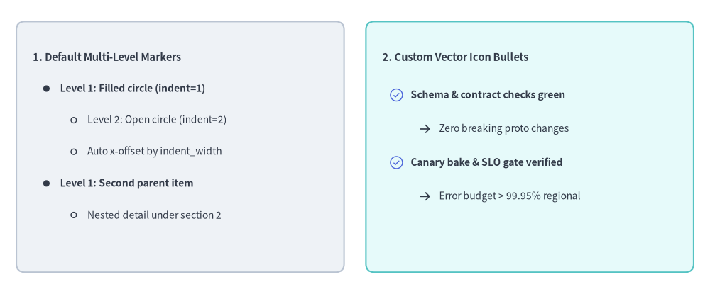
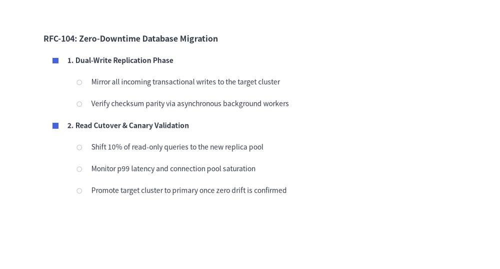
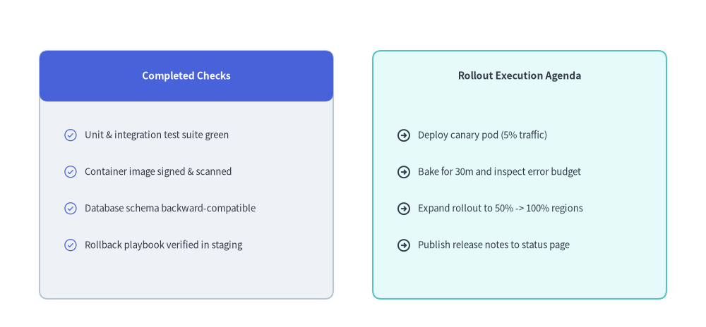

BulletPoints
The BulletPoints component renders multi-level nested bullet lists starting from a top-left anchor (x, y).
It supports customizable indentation widths, line spacing, per-level shape or icon markers, and layout-preserving visibility toggling.

Source Code
from drawlib.canvas import save, setup
from drawlib.icons import phosphor
from drawlib.shapes import rectangle
from drawlib.smartarts import BulletPoints
from drawlib.styles import Styles
from drawlib.text import text
setup(width=130, height=54)
# 1. Left Card: Built-in Default Multi-Level Bullet Markers (indent=0, 1, 2)
rectangle((33, 27), width=60, height=46, style=Styles.Neutral.patch(shape_r=1.5))
bp_default = BulletPoints(
text_style=Styles.Dark.patch(text_size=10.0),
vertical_margin=5.8,
indent_width=5.0,
)
bp_default.set_indent(0)
bp_default.add("1. Default Multi-Level Markers", text_style=Styles.DarkBold.patch(text_size=10.5))
bp_default.set_indent(1)
bp_default.add("Level 1: Filled circle (indent=1)", text_style=Styles.DarkBold.patch(text_size=10.0))
bp_default.set_indent(2)
bp_default.add("Level 2: Open circle (indent=2)")
bp_default.add("Auto x-offset by indent_width")
bp_default.set_indent(1)
bp_default.add("Level 1: Second parent item", text_style=Styles.DarkBold.patch(text_size=10.0))
bp_default.set_indent(2)
bp_default.add("Nested detail under section 2")
bp_default.draw(xy=(6, 43.5))
# 2. Right Card: Custom Vector Icon Bullets (set_bullet_style with Phosphor Icons)
rectangle((97, 27), width=60, height=46, style=Styles.SecondaryNeutral.patch(shape_r=1.5))
text((70, 43.5), "2. Custom Vector Icon Bullets", style=Styles.DarkBold.patch(text_size=10.5, halign="left"))
bp_icons = BulletPoints(
text_style=Styles.Dark.patch(text_size=10.0),
vertical_margin=6.2,
indent_width=5.2,
)
bp_icons.set_bullet_style(
indent_level=1,
function=phosphor.check_circle,
style=Styles.PrimaryFlat,
args={"width": 2.8},
)
bp_icons.set_bullet_style(
indent_level=2,
function=phosphor.arrow_right,
style=Styles.DarkBold,
args={"width": 2.4},
)
bp_icons.set_indent(1)
bp_icons.add("Schema & contract checks green", text_style=Styles.DarkBold.patch(text_size=10.0))
bp_icons.set_indent(2)
bp_icons.add("Zero breaking proto changes")
bp_icons.set_indent(1)
bp_icons.add("Canary bake & SLO gate verified", text_style=Styles.DarkBold.patch(text_size=10.0))
bp_icons.set_indent(2)
bp_icons.add("Error budget > 99.95% regional")
bp_icons.draw(xy=(70, 36.5))
save()
1. Multi-Level Nested Bullet Hierarchy
By default, indent=0 renders unbulleted section titles, indent=1 renders filled circle bullets, and indent=2 renders open outline circle bullets. You can also customize any indentation level's bullet marker using set_bullet_style(...).
from drawlib.canvas import save, setup
from drawlib.shapes import circle, rectangle
from drawlib.smartarts import BulletPoints
from drawlib.styles import Colors, Styles
setup(width=115, height=56)
bp = BulletPoints(
text_style=Styles.Dark.patch(text_size=10.5),
vertical_margin=5.2,
indent_width=5.5,
)
# Customize level-1 marker to a Primary square and level-2 to a Muted circle
bp.set_bullet_style(
indent_level=1,
function=rectangle,
style=Styles.PrimaryFlat.patch(shape_line_width=0),
args={"width": 1.4, "height": 1.4},
)
bp.set_bullet_style(
indent_level=2,
function=circle,
style=Styles.DarkThin.patch(shape_fill_color=Colors.White),
args={"radius": 0.6},
)
bp.set_indent(0)
bp.add("RFC-104: Zero-Downtime Database Migration", text_style=Styles.DarkBold.patch(text_size=11.5))
bp.set_indent(1)
bp.add("1. Dual-Write Replication Phase", text_style=Styles.DarkBold.patch(text_size=10.5))
bp.set_indent(2)
bp.add("Mirror all incoming transactional writes to the target cluster")
bp.add("Verify checksum parity via asynchronous background workers")
bp.set_indent(1)
bp.add("2. Read Cutover & Canary Validation", text_style=Styles.DarkBold.patch(text_size=10.5))
bp.set_indent(2)
bp.add("Shift 10% of read-only queries to the new replica pool")
bp.add("Monitor p99 latency and connection pool saturation")
bp.add("Promote target cluster to primary once zero drift is confirmed")
bp.draw(xy=(6, 49))
save()

2. Checklist & Agenda Cards with Vector Icon Markers
By passing Phosphor icon functions (such as phosphor.check_circle or phosphor.arrow_right) to set_bullet_style(...) and placing BulletPoints inside rectangular cards, you can create rich release checklists, feature comparison cards, and sprint agendas.
from drawlib.canvas import save, setup
from drawlib.icons import phosphor
from drawlib.shapes import rectangle
from drawlib.smartarts import BulletPoints
from drawlib.styles import Styles
from drawlib.text import text
setup(width=126, height=54)
# Left Card: Completed Pre-Flight Checks (Neutral card + Primary header)
rectangle((32, 27), width=56, height=46, style=Styles.Neutral.patch(shape_r=1.5))
rectangle(
(32, 45.5),
width=56,
height=9,
style=Styles.PrimaryFlat.patch(shape_r=1.5),
text="Completed Checks",
text_style=Styles.WhiteBold.patch(text_size=10.5),
)
done_list = BulletPoints(
text_style=Styles.Dark.patch(text_size=10.0),
vertical_margin=6.6,
indent_width=5.2,
)
done_list.set_bullet_style(
indent_level=1,
function=phosphor.check_circle,
style=Styles.PrimaryFlat,
args={"width": 2.8},
)
done_list.set_indent(1)
done_list.add("Unit & integration test suite green")
done_list.add("Container image signed & scanned")
done_list.add("Database schema backward-compatible")
done_list.add("Rollback playbook verified in staging")
done_list.draw(xy=(7, 34.5))
# Right Card: Rollout Execution Steps (SecondaryNeutral card)
rectangle((94, 27), width=56, height=46, style=Styles.SecondaryNeutral.patch(shape_r=1.5))
text((94, 45.5), "Rollout Execution Agenda", style=Styles.DarkBold.patch(text_size=10.5))
agenda_list = BulletPoints(
text_style=Styles.Dark.patch(text_size=10.0),
vertical_margin=6.6,
indent_width=5.2,
)
agenda_list.set_bullet_style(
indent_level=1,
function=phosphor.arrow_circle_right,
style=Styles.DarkBold,
args={"width": 2.8},
)
agenda_list.set_indent(1)
agenda_list.add("Deploy canary pod (5% traffic)")
agenda_list.add("Bake for 30m and inspect error budget")
agenda_list.add("Expand rollout to 50% -> 100% regions")
agenda_list.add("Publish release notes to status page")
agenda_list.draw(xy=(69, 34.5))
save()

3. Coordinate & Indentation Mechanics
- Top-Left Anchor
(x, y): Thexycoordinate passed tobp.draw(xy=...)specifies the left edge and vertical center of the first line (y). Subsequent items step downward byvertical_margin(y - i * vertical_margin). - Indentation Geometry:
- Text for an item at indentation level
indentstarts atx_text = x + indent_width * indent. - When
indent != 0and a bullet style is registered forindent, the marker is centered atx_marker = x + indent_width * (indent - 0.5).
- Text for an item at indentation level
- Default Bullet Markers:
indent = 0: No bullet marker (ideal for list titles and section headers).indent = 1: Filled circle (radius=0.5) matchingtext_style.text_color.indent = 2: Open outline circle (radius=0.5) matchingtext_style.text_color.
4. API Reference
Constructor
BulletPoints(
*,
text_style: Style,
vertical_margin: float,
indent_width: float,
)
Methods & Properties
set_indent(level: int) -> None: Sets the active indentation level (0,1,2, ...) applied to subsequentadd()calls.set_bullet_style(indent_level: int, function: Callable, style: Style, args: dict) -> None: Registers a custom drawing callable (such asrectangle,circle, or anyphosphor.*icon function) forindent_level. At draw time,function(xy=(x_marker, y), style=style, **args)is invoked.add(text: str, *, text_style: Style | None = None, show: bool = True) -> BulletPointItem: Appends a bullet item at the current indentation level and returns a mutableBulletPointItem(indent: int,text: str,text_style: Style,show: bool). Note thatBulletPointItem.styleis also provided as a mutable property alias forBulletPointItem.text_style. Settingshow=Falsehides the bullet and text while keeping the vertical spacing reserved for subsequent lines.bp.items -> list[BulletPointItem]: Returns the list of all registeredBulletPointIteminstances, allowing deferred mutation of.text,.text_style(or.style),.indent, and.showbefore or betweendraw()calls.draw(xy: tuple[float, float], scale: float = 1.0) -> None: Renders all visible bullet items starting atxy, with optional proportional scaling viascale.